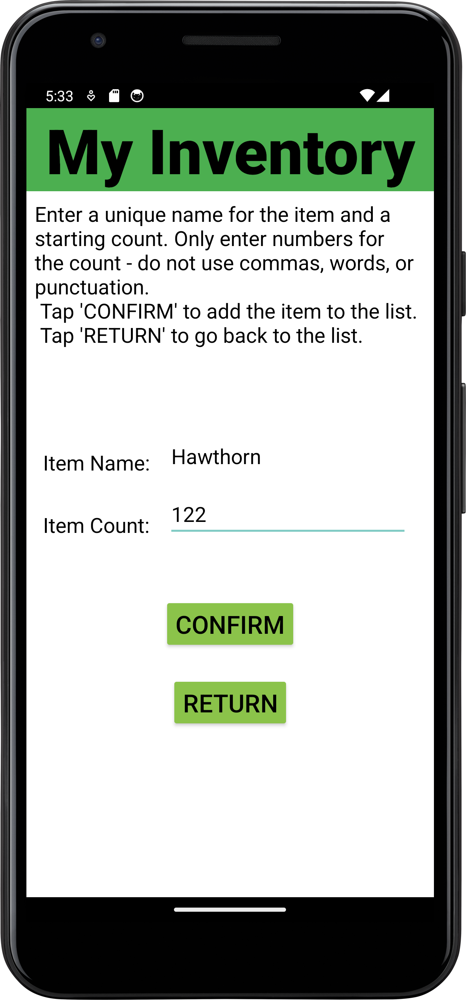
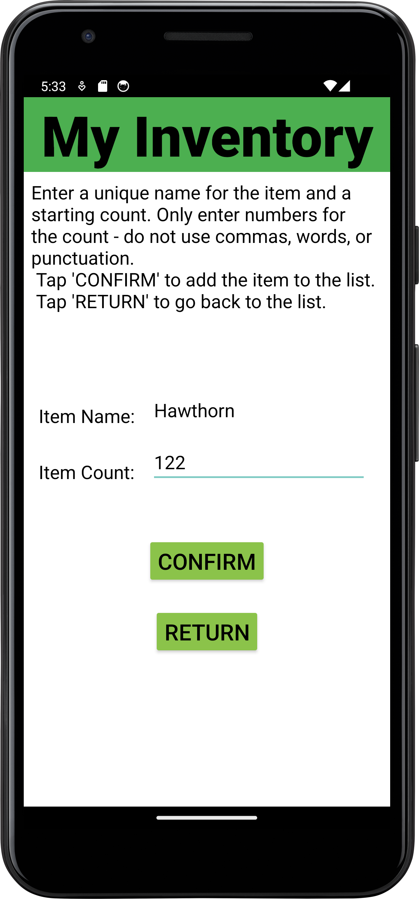

About This Project
The original 'My Inventory' app was created in CS360: Mobile Architecture and Development in 2023 as a simple Android application, written in Java and built on Android Studio Flamingo. This was my first experience with mobile development, and it fulfilled the project requirements with a functional layout, login screen, a main view that displays data from a local SQLite database, and CRUD functions for items in the database. In CS499 Computer Science Capstone, it was enhanced in three steps over the course of the CS 499 Computer Science Capstone. Each step covers a different area of development: Software Design and Development, Algorithms and Data Structures, and Databases. I chose this project because it was something I had no prior experience in, something I enjoyed learning and working on, and mobile application development is a fast-growing field that could soon replace web applications as a primary need for businesses and way to interact with users and customers. More people use smartphones daily than PCs and roughly 70% of adults believe apps on their 'pocket computers' will make websites obsolete in 10 years (SWNS 2023.) Mobile gaming is also a growing and lucrative field, accounting for around 45% of worldwide video game industry revenue in 2022 (Statista.)
This application was first enhanced with a UX re-design using a variety of tools including Figma and Canva for documents such as user personas and use-cases considered for the application's features. I designed an entirely new layout that aligned better with accessibility standards for the wide target audience. The code was re-written almost from the ground up, with better comment documentation and code organization as well as adherence to standards and naming conventions. The new layout was made responsive for all normal-range screen sizes with the Constraint Layout, and the item list was changed to a Recycler View in line with best practices for efficiency. Font sizes were enlarged, elements were spaced further, all buttons and elements were given alt text for screen readers, and the color contrast was checked for recommended difference. All strings and values were placed in xml files so that they could be re-used and translated. Appropriate resources were used for the colors and icons, filenames were also changed, the app was given a name and the package was given an appropriate name.
The second enhancement improved the code's organization and security. Errors were fixed and logic improved so that the Recycler View populated with data properly, and then logic was added for the update and delete item functions. The lookup algorithms use SQL commands to get a unique index, which is an optimal O(1) time complexity. The string comparisons are at most O(n). Layers of input validations were added and optimized, open conditionals were closed, and Javadocs were added for custom functions to improve the experience for other developers working with the code. The show/hide password toggle was added using a newer built-in feature in the Java Android library as the most efficient implementation. The 'show zero stock items' feature was added with a Boolean toggle in the Recycler Adapter, and a note was added about the bug upon testing. Logging and error handling was added, as was a complete TODO/FIXME task list within the code.
The third enhancement objective was to implement a remote database, a solution for the use cases in which the user would like to share access to the same inventory with an associate or household member and use the app without wi-fi. Google Firebase services were chosen for their security features, user support, intuitiveness, and good documentation as well as ease of functionality with mobile applications. A service also exists in the Firebase toolbox for offline usage and periodic syncing. The design documents outline the plan for the final product. I set up a Firestore database, created the NoSQL version of the tables for testing, connected it to the application, and then wrote and tested code for the Login view. In the third version of the app, anything to do with the Users table is handled by the remote database while the items are still handled by local SQLite. Code documentation was improved, bugs were fixed and a complete TODO task list with numbered steps was added to complete this upgrade to the app.
This current version of the application meets standards for accessibility and user needs with its design, secure and efficient code, and professional documentation for collaboration and debugging.
Skills Demonstrated
I employed strategies for building collaborative environments that enable diverse audiences to support organizational decision-making in the field of computer science by redesigning the more intuitive UI adherent to Android design and accessibility standards, including translatable and screen-readable text, creating design documents and task lists, and by using sensible filenames, variables, and function names.
I designed, developed, and delivered professional-quality oral, written, and visual communications that are coherent, technically sound, and appropriately adapted to specific audiences and contexts by creating grammatically correct, spell-checked presentations and narratives with well-organized thoughts as well as graphs and design documents that adhere to design standards such as comfortable contrast and spacing. I also included comments and thorough code documentation that is descriptive and provided reasoning for the choices made. The code follows easily readable format and naming conventions.
I designed and evaluated computing solutions that solve a given problem using algorithmic principles and computer science practices and standards appropriate to its solution, while managing the trade-offs involved in design choices in my implementations of the application’s functions, validations, database tools and design choices, and CRUD operations for the data. I chose solutions for the layout, data display, and input string parsing based on efficiency as well as industry standards and ease of coding, weighing these values against each other to determine the best solution. I checked over conditionals to ensure that default cases were handled and provided error handling in a logical order. Appropriate structures and data types were chosen for the given context.
I demonstrated an ability to use well-founded and innovative techniques, skills, and tools in computing practices for the purpose of implementing computer solutions that deliver value and accomplish industry-specific goals in my use of a wide variety of design and collaborative chart-making methods and tools, utilization of Android Studio’s various capabilities for design, emulation and coding, and fast adaptability to the situation by learning and analyzing new tools and current standards. I upgraded the entire project from older versions of the IDE, Gradle, Java, and all its dependencies. I selected a current industry-favorite tool suite for the database plan and integrated it with the project, justifying it based on security features, efficiency, and support.
I developed a security mindset that anticipates adversarial exploits in software architecture and designs to expose potential vulnerabilities, mitigate design flaws, and ensure privacy and enhanced security of data and resources by adding layers of input validation to protect against code injections and overflow as well as thorough error-handling to prevent application crashes and document details about bugs. I selected validations and limitations on data that made sense for the application’s context not only to secure it but provide an enjoyable user experience. I considered which data is sensitive and how it will be used to include relevant requirements in the database design plan. Vulnerabilities in the program’s logic were corrected or made note of to fix before releasing as a final product. IDE warnings were analyzed and addressed, eliminating most of them. Reasoning was provided in comments so that other developers can understand the importance of these measures.
If you wish to read the full narratives of the process, you can find them in the GitHub repo in the 'narratives' folder.
References
Mobile gaming market in the United States. (2023, December 18). Statista. https://www.statista.com/topics/1906/mobile-gaming/#topicOverview
SWNS. (2023, February 15). Could apps replace websites in the next decade? New York Post. https://nypost.com/2023/02/15/could-apps-replace-websites-in-the-next-decade/
'My Inventory' Mobile App - All Project Files (Github Repo)
 

Code Review: 'My Inventory' Android App and 'Brick Breaker' Game with OpenGL & C++
This approximately 45-minute example of an informal code review explains and inspects two SNHU projects, and outlines the original plan made for the three enhancement milestones in the computer science capstone class. Though this plan was changed, this video demonstrates competency and awareness of security concepts, coding standards, best practices, algorithmic logic, and collaborative communication.
UI/UX design documents (click to enlarge and open in a new tab.)
I made these personas with Canva, use-case diagram with Venngage, and initial wireframes with Figma. These helped plan solutions for the users' needs in the form of an upgraded inventory-tracking mobile application and guide the first UX enhancement as well as the rest of this project's functionality and design choices. They demonstrate familiarity with design principles and tools as well as the planning process in software development.


Database Design Diagram & Requirements (click to enlarge and open in a new tab.)
This editable PNG diagram was created on draw.io (now app.diagrams.net) and shows a simple UML diagram of the database structure and notes on it's requirements, goals and implementation. This guided the third enhancement and future goals for a release of the application.